Chapter10 Scatter Plots
10.1 Basic scatter plots
Last Revision
## [1] "2025-04-21"The following command verifies that you have the necessary libraries installed and activates them if available on your system. The package pacman evaluates if you have them installed and installs them if necessary.
if (!require("pacman")) install.packages("pacman")
pacman::p_load(QuantPsyc, car, ggplot2, tidyverse, sjPlot, janitor)
library(QuantPsyc) # Package for Quantitative Psychology
library(car) # Companion to applied regression
library(ggplot2) # Data Visualization
library(tidyverse) # Data Manipulation
library(sjPlot) # Data Visualization
library(janitor) # Data Cleaning
library(conflicted)
conflicts_prefer(lubridate::minute, lubridate::second, lubridate::month)Linear regression is the basic model to evaluate whether there is a relationship linear that is, a straight line between two variables. This relationship between the variables can be positive or negative. There are other types of regression, which includes nonlinear regression such as quadratic \(y ~ ax^2+bx+c\) or cubic \(y ~ ax^3 +bx^2+cx+d\), logarithmic \(y ~ a + b*log(x)\) among many other alternatives. There are also alternatives are you will see in that are nonlinear regressions module.
Here we will be evaluating only linear regression
We see a fictitious example
The data is from some neighborhoods of Macondo where the numbers of bars in a neighborhood and the number of homicides in that neighborhood. The data you will find the data section below
## Rows: 8 Columns: 2
## ── Column specification ───────────────────────────
## Delimiter: ","
## dbl (2): pubs, mortality
##
## ℹ Use `spec()` to retrieve the full column specification for this data.
## ℹ Specify the column types or set `show_col_types = FALSE` to quiet this message.## # A tibble: 8 × 2
## pubs mortality
## <dbl> <dbl>
## 1 10 1000
## 2 20 2000
## 3 30 3000
## 4 40 4000
## 5 50 5000
## 6 60 6000
## 7 70 7000
## 8 500 1000010.2 the lm() function
Let us do a simple linear regression, using the function lm(), for “linear model”= linear model. A regression takes two continuous variables. It is important that these variables have a normal distribution. The difference between a correlation and a regression is that the first is an analysis that describes the general pattern between the variables and the second is that not only is the pattern described but a prediction is made about the relationship between the variables. Using regression one also calculates a line that describes the relationship between the variables. This variable can be described as \(y=m_x+b\) where m represents the slope and b represents the intercept. You can also see it in books in the following way \(y=\alpha+\beta_x\) where the \(\beta\) beta represents the slope and the \(\alpha\) the intercept, this is the preferred method in the books on English.
The linear regression function in R is lm() is composed of lm(y~x, data= “df”). Note the accent ~. There are two tests, the first is for determine if \(\alpha\) is non-zero. The null hypothesis is
- Ho: the intercept \(\alpha\) is equal to zero
- Ha: the intercept, \(\alpha\) is not equal to zero. So the point where the line intercepts zero can be greater than or less that zero.
The second null hypothesis is that the slope is different from zero. This means that the slope does not suggest/support a pattern of increasing and decrease between the two variables.
- Ho: the slope \(\beta\) is equal to zero
- Ha: the slope, \(\alpha\) is not equal to zero. So the relationship between the two variables is either positive or negative.
Now we evaluate the results of the regression between the number of bars in a neighborhood (the barrios) and mortality in this same sector. HE Note that the coefficients of the line are \(y=3352+14.3*x\). Then the intercept at zero starts at 3352 fatalities and for each bar. Additionally there are 14.3 more fatalities. This means that if there are no bars x=0, the expected number of fatalities is 3352.
Now to determine if these values are significant, we must evaluate the value of p in each line. The null hypothesis of the intercept has a value of p =0.005, which suggests that the hypothesis should be rejected null, and consequently we accept the alternative hypothesis, that the intercept is not equal to zero. The slope has a value of p=0.015 and the null hypothesis is also rejected, this suggests that as increases the number of bars increases the number of fatalities, for example for each additional bar we expect 14.3 additional fatalities.
##
## Call:
## lm(formula = mortality ~ pubs, data = pubs)
##
## Residuals:
## Min 1Q Median 3Q Max
## -2495.3 -996.3 -223.5 1145.2 2644.3
##
## Coefficients:
## Estimate Std. Error t value Pr(>|t|)
## (Intercept) 3351.955 781.236 4.291 0.00515 **
## pubs 14.339 4.301 3.334 0.01572 *
## ---
## Signif. codes: 0 '***' 0.001 '**' 0.01 '*' 0.05 '.' 0.1 ' ' 1
##
## Residual standard error: 1864 on 6 degrees of freedom
## Multiple R-squared: 0.6495, Adjusted R-squared: 0.591
## F-statistic: 11.12 on 1 and 6 DF, p-value: 0.01572## 1 2 3 4 5 6 7
## -2495.3445 -1638.7337 -782.1229 74.4879 931.0987 1787.7095 2644.3203
## 8
## -521.4153## 1 2 3 4 5 6
## 2.132784e-01 8.530493e-02 1.814286e-02 1.547980e-04 2.293965e-02 8.092291e-02
## 7 8
## 1.710655e-01 2.271429e+02tab_model(
pubReg,show.df = TRUE,
CSS = list(
css.depvarhead = 'color: red;',
css.centeralign = 'text-align: left;',
css.firsttablecol = 'font-weight: bold;',
css.summary = 'color: blue;'
)
)## Registered S3 method overwritten by 'parameters':
## method from
## predict.kmeans statip| mortality | ||||
|---|---|---|---|---|
| Predictors | Estimates | CI | p | df |
| (Intercept) | 3351.96 | 1440.34 – 5263.57 | 0.005 | 6.00 |
| pubs | 14.34 | 3.82 – 24.86 | 0.016 | 6.00 |
| Observations | 8 | |||
| R2 / R2 adjusted | 0.649 / 0.591 | |||
10.3 Visualization of the regression
It is observed that there is an increase in fatalities with an increase in the number of bars. But notice the value on the right that seems to be very atypical compared to the others.
## `geom_smooth()` using formula = 'y ~ x'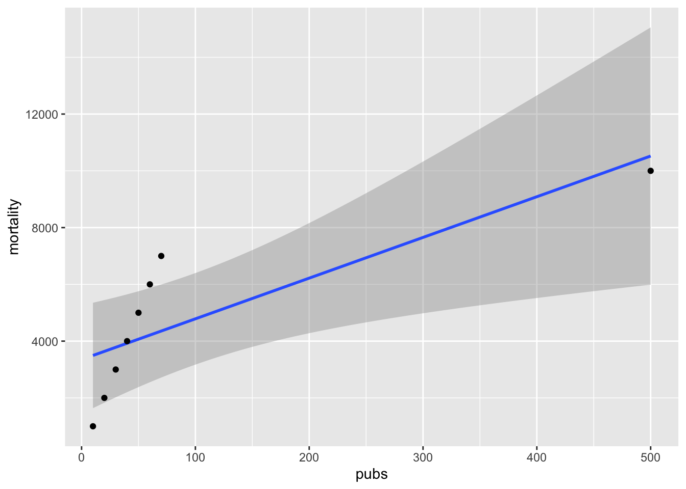
10.4 The impact of outliers
On certain occasions, values outside the normal range can make great changes in the result, in this case the regression result. What is the effect of the large value? We remove that value from the file data and re-evaluate the model (linear regression). Note that now the model is extremely different \(y=-163.7+103.2*x\). Are the two hypotheses?
pubsnew <- pubs[ which(pubs$pubs<80), ] # remove the outlier
pubsnew=pubsnew %>%
add_row(pubs = 4, mortality = 0) # adding a pair of values
pubRegNew <- lm(mortality~pubs, data = pubsnew)
summary(pubRegNew)##
## Call:
## lm(formula = mortality ~ pubs, data = pubsnew)
##
## Residuals:
## Min 1Q Median 3Q Max
## -249.11 -36.48 19.57 75.62 131.67
##
## Coefficients:
## Estimate Std. Error t value Pr(>|t|)
## (Intercept) -163.701 86.000 -1.903 0.106
## pubs 103.203 2.055 50.229 4.18e-09 ***
## ---
## Signif. codes: 0 '***' 0.001 '**' 0.01 '*' 0.05 '.' 0.1 ' ' 1
##
## Residual standard error: 128.9 on 6 degrees of freedom
## Multiple R-squared: 0.9976, Adjusted R-squared: 0.9972
## F-statistic: 2523 on 1 and 6 DF, p-value: 4.177e-09tab_model(
pubRegNew,show.df = TRUE,
CSS = list(
css.depvarhead = 'color: red;',
css.centeralign = 'text-align: left;',
css.firsttablecol = 'font-weight: bold;',
css.summary = 'color: blue;'
)
)| mortality | ||||
|---|---|---|---|---|
| Predictors | Estimates | CI | p | df |
| (Intercept) | -163.70 | -374.14 – 46.73 | 0.106 | 6.00 |
| pubs | 103.20 | 98.18 – 108.23 | <0.001 | 6.00 |
| Observations | 8 | |||
| R2 / R2 adjusted | 0.998 / 0.997 | |||
## `geom_smooth()` using formula = 'y ~ x'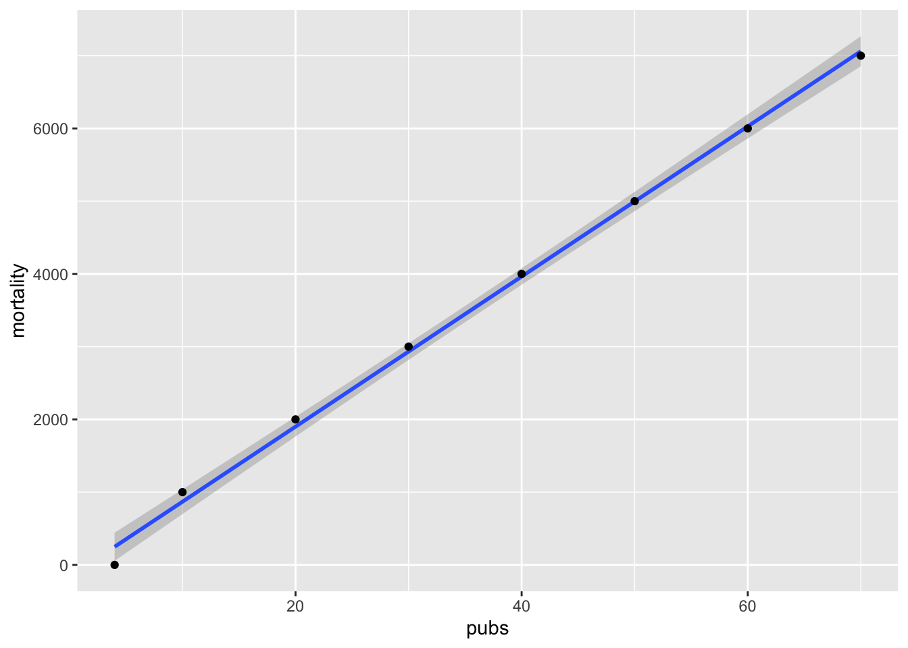
10.5 Selling music records
We now evaluate a similar more complex and more realistic data set those one would encounter in a study in medicine, sociology or ecological.
The data represents the amount of money dedicated to the promotion of different CD’s from a music company and the number of CD’s (CD/downloads) sold. In the first line we see the amount of pounds sterling, £ (UK) dedicated to the promotion of the album music, in the first line we see that he spent £10,256, and then the number of CDs sold was 330. We have information about 200 albums different.
## Rows: 200 Columns: 4
## ── Column specification ───────────────────────────
## Delimiter: ","
## dbl (4): adverts, sales, airplay, attract
##
## ℹ Use `spec()` to retrieve the full column specification for this data.
## ℹ Specify the column types or set `show_col_types = FALSE` to quiet this message.## # A tibble: 6 × 4
## adverts sales airplay attract
## <dbl> <dbl> <dbl> <dbl>
## 1 10.3 330 43 10
## 2 986. 120 28 7
## 3 1446. 360 35 7
## 4 1188. 270 33 7
## 5 575. 220 44 5
## 6 569. 170 19 5## [1] 200##
## Shapiro-Wilk normality test
##
## data: Album_Sales_1_new$adverts
## W = 0.92542, p-value = 1.482e-08library(nortest)
#Anderson-Darling
ad.test(Album_Sales_1_new$adverts) # test of normality using Anderson_Darling test##
## Anderson-Darling normality test
##
## data: Album_Sales_1_new$adverts
## A = 3.8762, p-value = 1.089e-09We begin by graphing the relationship between the two variables. Note that in the geom_smooth() part, has to include method=lm, this means that the method of constructing the line will use linear regression. It is added to the linear function \(\epsilon\) that represents the errors of the values when comparing with the line that represents the best model.
\[Y_{ i }=\beta _{ 0 }+\beta _{ 1 }X_{ i }+\epsilon _{ i }\] Remember that \(\beta _{ 0 }\) is the intercept and the \(\beta _{ 1 }x_{ i }\) is the earring. The shaded area is the area of 95% interval of trust. This means that the best line, intercept and slope could vary in this range if we repeat the experiment. Note here all the alternatives, I added the two extreme slopes, with a slope major (red) and a minor (violet). Each point represents the sale of a CD with its corresponding amount dedicated to the promotion. The \(epsilon\) would be the difference between the best line and the original value. This is also called the residuals.
library(ggplot2)
ggplot(Album_Sales_1_new,aes(x=adverts, y=sales))+
geom_smooth(method=lm, se = TRUE)+
geom_point()+
geom_segment(aes(x=0, y=120, xend=2250, yend=380), colour="red")+
geom_segment(aes(x=0, y=150, xend=2250, yend=320), colour="purple")## Warning in geom_segment(aes(x = 0, y = 120, xend = 2250, yend = 380), colour = "red"): All aesthetics have length 1, but the data has 200
## rows.
## ℹ Please consider using `annotate()` or provide
## this layer with data containing a single row.## Warning in geom_segment(aes(x = 0, y = 150, xend = 2250, yend = 320), colour = "purple"): All aesthetics have length 1, but the data has 200
## rows.
## ℹ Please consider using `annotate()` or provide
## this layer with data containing a single row.## `geom_smooth()` using formula = 'y ~ x'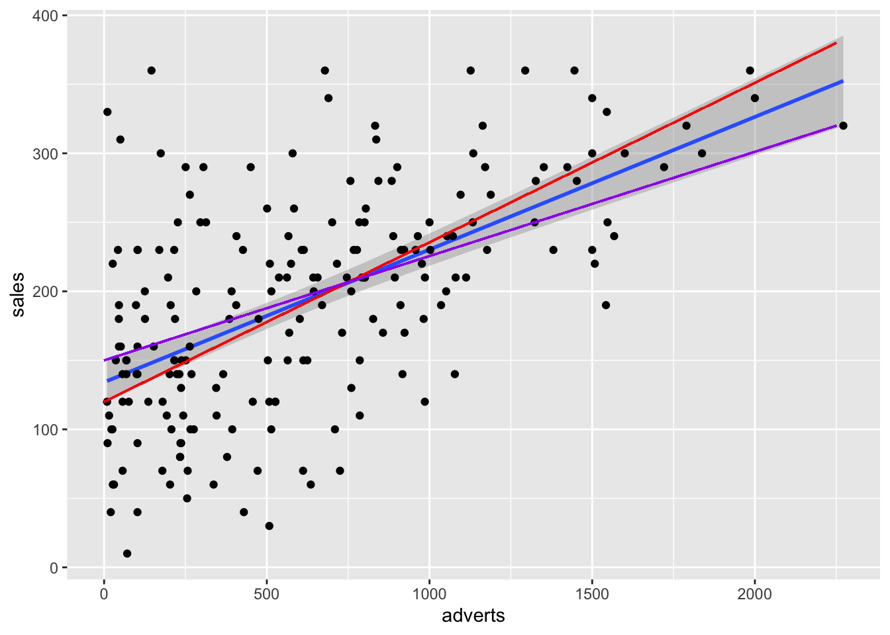
The linear model with the lm() function. How do you interpret the coefficients and if these are significant? Are the null hypotheses rejected?
library(sjPlot)
model1=lm(sales~adverts, Album_Sales_1_new)
#summary(model1)
tab_model(
model1,show.df = TRUE,
CSS = list(
css.depvarhead = 'color: red;',
css.centeralign = 'text-align: left;',
css.firsttablecol = 'font-weight: bold;',
css.summary = 'color: blue;'
)
)| sales | ||||
|---|---|---|---|---|
| Predictors | Estimates | CI | p | df |
| (Intercept) | 134.14 | 119.28 – 149.00 | <0.001 | 198.00 |
| adverts | 0.10 | 0.08 – 0.12 | <0.001 | 198.00 |
| Observations | 200 | |||
| R2 / R2 adjusted | 0.335 / 0.331 | |||
## `geom_smooth()` using formula = 'y ~ x'
10.6 Linear Regression Assumptions
Equality of variance: In the first graph you must evaluate whether the data are distributed more or less equally. I mean you must determine that not there is more variation in one area of the graph compared to another area. Note that the data are more or less equally distributed over above and below the zero line through the distribution of the Fitted” values, which are the predicted values.
Normality of the data, evaluate the graph #2 with the graph of qqplot we see that the data follows the null model (the line) almost perfectly fits the data, then one can assume that the data complies with a normal distribution. But note that the data in the upper quartile they are not above the line.
Evaluate whether there are biased data (outliers) that influence the results, evaluate graph #3. If the standardized values of “Student” are greater than 3, this suggests that there are outliers.
In the fourth graph, Cook’s distance evaluate if there are values that have a lot of weight if whether or not they are included in the analysis, evaluate graph #4. These are going to be identified. The values to worry about are those that are above or below the broken line. In this graph there are three values that must be evaluated (1, 42, 169), these values must be ensured to be correct. It is always good to remove the biased values and redo the analysis to observe how different the results are. Typically more data in an analysis, the less weight a biased value will have on the results, unless this value is very different from most of the data.
plot(model1) # Evaluate the assumptions, 1. Equality of variance, 2. Normality, 3. Students biased estimator, 4. Biased data (Cook's Distance)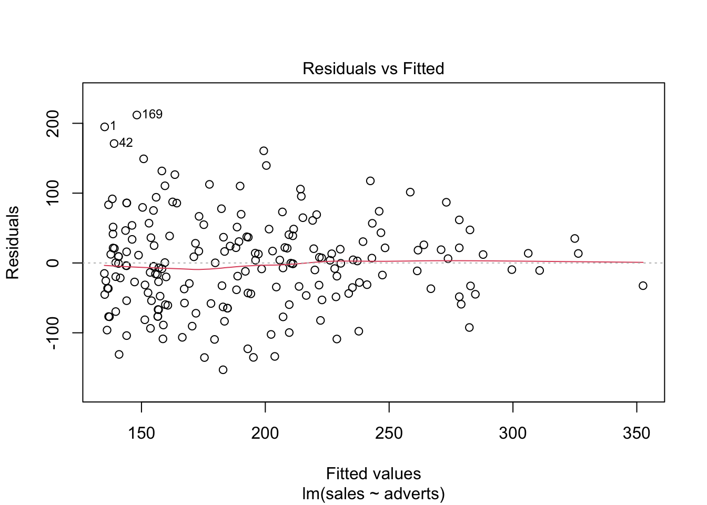 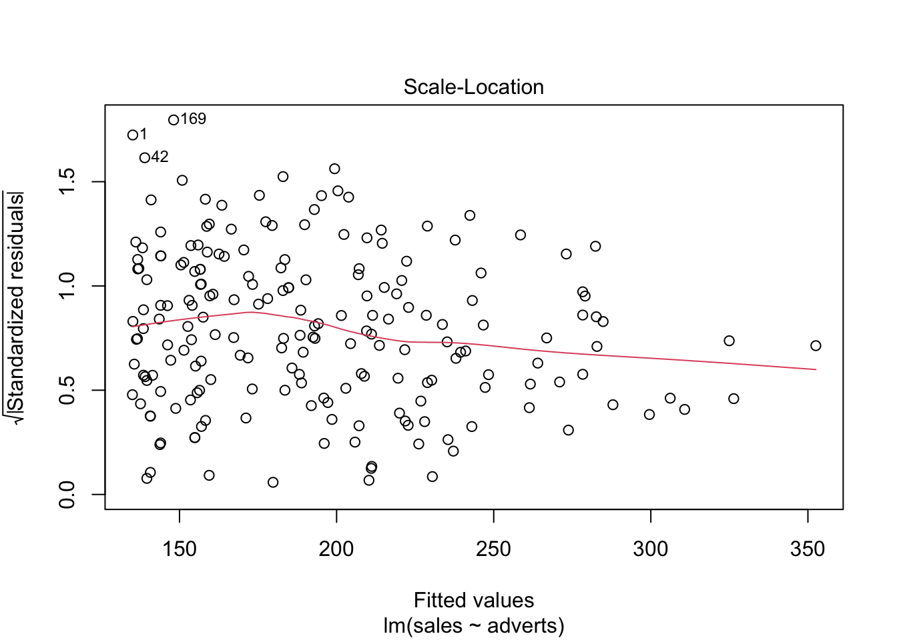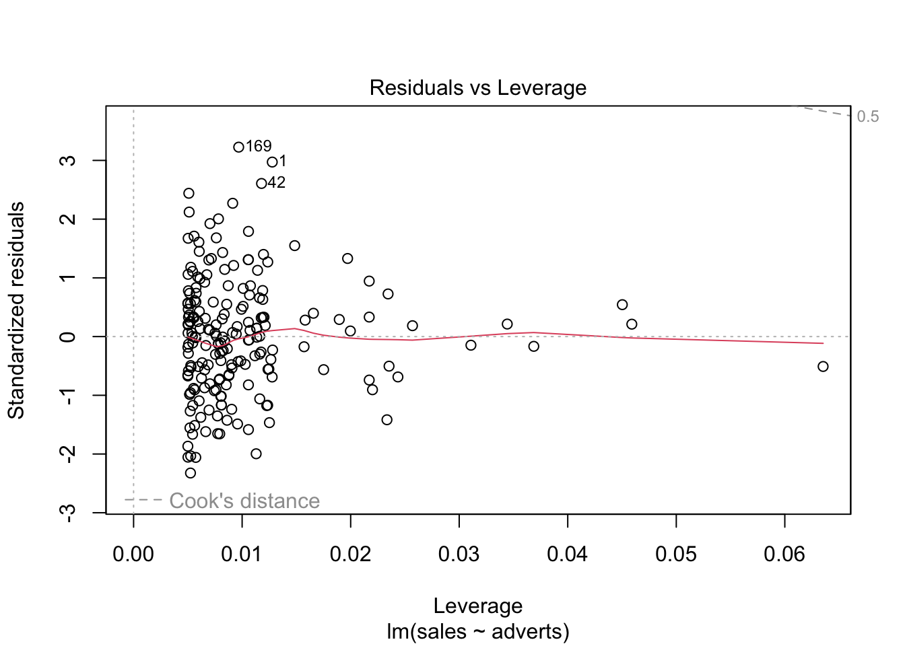
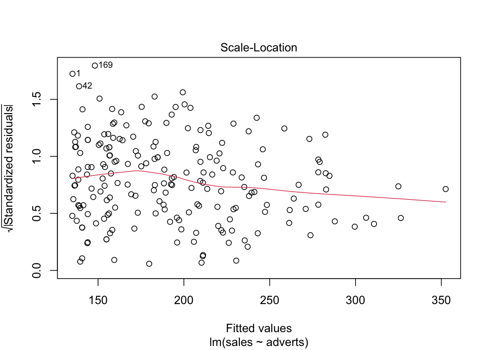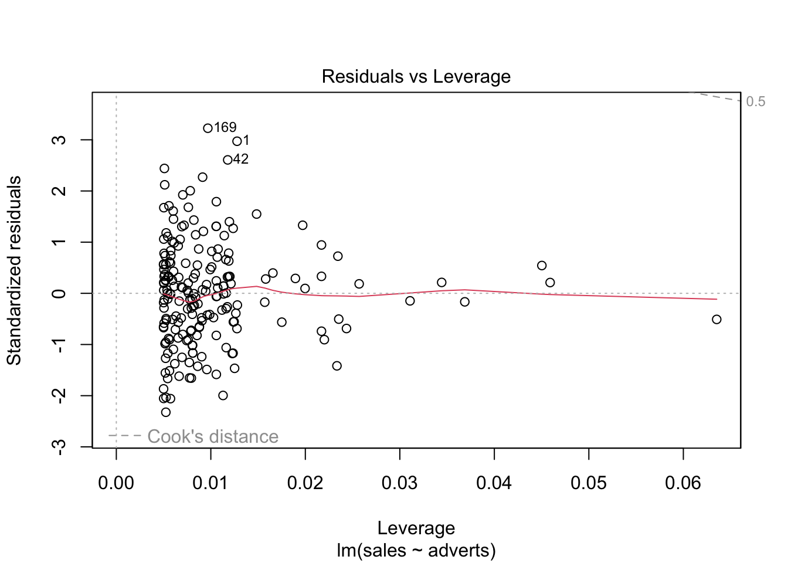
10.7 Cook’s Distance
Continuing with the theme of evaluating whether there are values that could influence the analysis a lot, we can use one of the tools to evaluate the weight of each value on a linear regression based on least squares methods, called Cook’s Distance. This analysis was developed by R. Dennis Cook in 1977 and has as its objective to evaluate each value in the data matrix and the weight it has about the result (when it is included or not in the analysis). Produces an index for each of the values on the result based on the residual values is called Cook’s Distance. Therefore, this analysis evaluates the relative impact of each value about the index. Unfortunately it is not clear what the value is critical; That is, what value can tell us that we are overweight? about the results. The two main suggestions are: Distance of Cook, Di, is greater than 1 (suggested by R. Dennis Cook Cook himself in 1982); and that Di > 4/n, where n is the number of observations (Bollen et al. 1990).
To make an illustration, we will continue with the model model1 using the values calculated in the previous model. The graph is will be re-organized using the seq_along option, so that the values in the X axis are based on the sequence of data in the file and the values on the Y axis are based on the values of the Distance of Cook. In this case, we see that all the values are well below of 1, suggesting that none of the individual values would greatly influence the results even if they were excluded. Now let us consider a second alternative of Di > 4/n, then we note 6 \(D_i\) values that are greater than 4/200=0.02 should be of concern, where 200 is the amount of data in the file. If you consider this second alternative, it would be necessary to evaluate 6 values in the table of data that could be suspicious (values above the line red). Note that it’s not that they are incorrect; rather, this result is only a tool to evaluate values that appear to have a considerable impact on the results.
Below is how to add the values of Cook’s distance to the data file, add a sequence column to the data, create a graph of Cook’s distance, and determine if there are values of Cook’s \(D_i\) greater than 1, or 4/n.
- the “cook.distance” values to your file
- Add a “sequence” column to the data
- Create a graph of Cook’s distance.
- Determine if there are values of Cook’s \(D_i\) greater than 1, or 4/n.
## [1] 0.02Album_Sales_1_new$cooks.distance<-cooks.distance(model1)
Album_Sales_1_new$sequence=c(1:200)
ggplot(Album_Sales_1_new, aes(sequence, cooks.distance))+
geom_point()+
geom_hline(aes(yintercept=4/length(Album_Sales_1_new$adverts), colour="red"))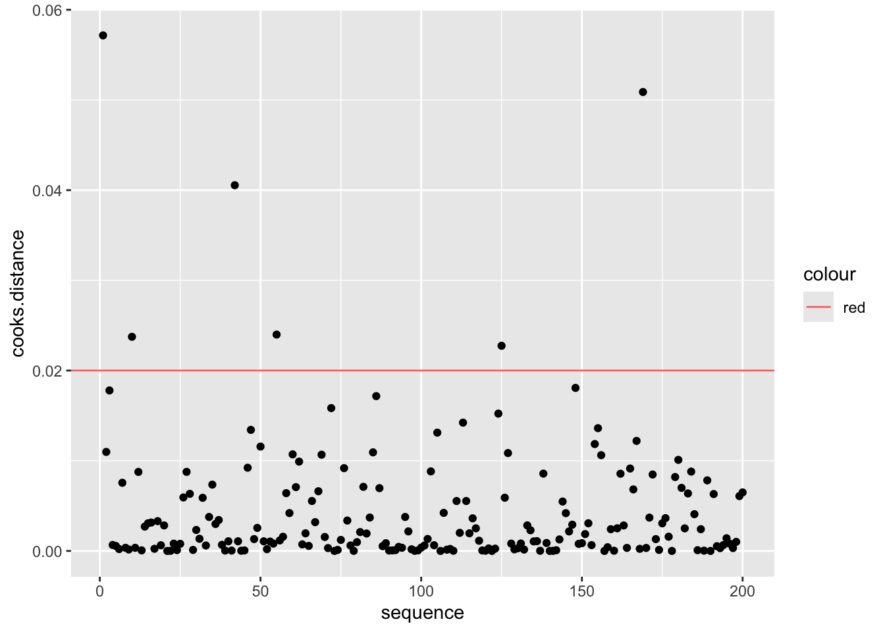
10.8 Steps to do a linear regression analysis
10.8.1 Step 1
First step, build your model and evaluate the coefficients.
The result: The coefficient (intercept) and slope of the model
10.8.2 Step 2
Evaluate if the coefficients are different from zero.
The first hypothesis: Determine if the intercept is equal to zero. Look at the value of p, Pr(>|t|), determine if the value is less than 0.05, if it is, the Ho is rejected and consequently we have confidence that the intercept does not include zero.
The second null hypothesis: Determine if the slope is equal to zero. Look at the value of p, Pr(>|t|), how the value is less than p=0.05, Ho is rejected and consequently we are confident that the slope does not include zero.
10.8.3 Step 3
Evaluate whether the data meet the assumptions of the model:
Equality of variance, use the residual graph
Normality, qqplot
Biased values, Cook’s test
##
## Call:
## lm(formula = sales ~ adverts, data = Album_Sales_1_new)
##
## Residuals:
## Min 1Q Median 3Q Max
## -152.949 -43.796 -0.393 37.040 211.866
##
## Coefficients:
## Estimate Std. Error t value Pr(>|t|)
## (Intercept) 1.341e+02 7.537e+00 17.799 <2e-16 ***
## adverts 9.612e-02 9.632e-03 9.979 <2e-16 ***
## ---
## Signif. codes: 0 '***' 0.001 '**' 0.01 '*' 0.05 '.' 0.1 ' ' 1
##
## Residual standard error: 65.99 on 198 degrees of freedom
## Multiple R-squared: 0.3346, Adjusted R-squared: 0.3313
## F-statistic: 99.59 on 1 and 198 DF, p-value: < 2.2e-16tab_model(
advertizingReg,show.df = TRUE,
CSS = list(
css.depvarhead = 'color: red;',
css.centeralign = 'text-align: left;',
css.firsttablecol = 'font-weight: bold;',
css.summary = 'color: blue;'
)
)| sales | ||||
|---|---|---|---|---|
| Predictors | Estimates | CI | p | df |
| (Intercept) | 134.14 | 119.28 – 149.00 | <0.001 | 198.00 |
| adverts | 0.10 | 0.08 – 0.12 | <0.001 | 198.00 |
| Observations | 200 | |||
| R2 / R2 adjusted | 0.335 / 0.331 | |||
10.9 Alternative to Graph the Residuals
10.9.1 Plot the residuals
If the assumption of equality of variance is met, what we will observe that the distribution of the residuals looks more or less uniform around the average of the residuals (zero). There are approximately equal number of values greater than zero (above the blue line) and less than zero (below the blue line) that are distributed to through the variable on the X axis, or estimated values. In addition that the residuals (negative or positive) are not limited to sub groups of the estimated values (in the X).
# "model1", nota que este no es un data frame pero un modelo
# La figura principal
ggplot(Album_Sales_1_new, aes(x=adverts, y=sales))+
geom_smooth(method=lm, se = TRUE)+
geom_point()## `geom_smooth()` using formula = 'y ~ x'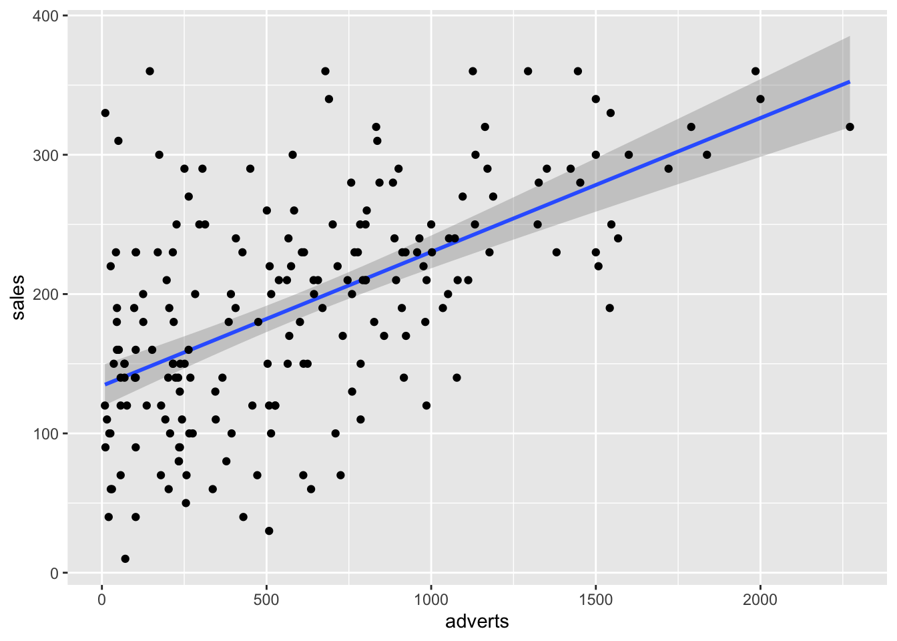
# Graficando los residuales con ggplot2
ggplot(model1, aes(x=.fitted, y=.resid))+ # note here we use the model1 with the .fitted and .resid to make the figure
geom_point()+
geom_smooth(method=lm)## `geom_smooth()` using formula = 'y ~ x'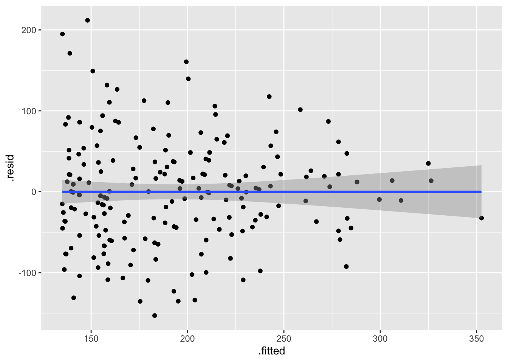
10.9.2 Exercise 1
The data state.x77 comes from the package datasets where represents information about the American states, their level population, income, level of illiteracy, life expectancy, and other variables. Select the illiteracy and life variables expectancy”, and evaluates if there is a relationship between the two variables.
Note you have to clean the variable names, because some of the names has spaces. The janitor package and the function are used clean_names().
Use illiteracy data and evaluate it as a predictor of life expectancy (life_exp).
Using the following data do a complete regression analysis linear.
Determines whether the assumptions of the linear regression are met.
library(datasets)
state.x77=as.data.frame(state.x77) # convert the data into a data frame
state.x77=janitor::clean_names(state.x77) # clean the names of the variables
head(state.x77)## population income illiteracy life_exp murder hs_grad frost area
## Alabama 3615 3624 2.1 69.05 15.1 41.3 20 50708
## Alaska 365 6315 1.5 69.31 11.3 66.7 152 566432
## Arizona 2212 4530 1.8 70.55 7.8 58.1 15 113417
## Arkansas 2110 3378 1.9 70.66 10.1 39.9 65 51945
## California 21198 5114 1.1 71.71 10.3 62.6 20 156361
## Colorado 2541 4884 0.7 72.06 6.8 63.9 166 10376610.9.3 Exercise 2
The ToothGrowth data set in the datasets package contains the result of an experiment that studies the effect of vitamin C on the growth of teeth in 60 guinea pigs. each animal received one of three dose levels of vitamin C (0.5, 1, and 2 mg/day) by one of two methods of administration (orange juice or ascorbic acid (a form of vitamin C and coded as VC).
Using the following data do a complete regression analysis linear.
## len supp dose
## 1 4.2 VC 0.5
## 2 11.5 VC 0.5
## 3 7.3 VC 0.5
## 4 5.8 VC 0.5
## 5 6.4 VC 0.5
## 6 10.0 VC 0.5